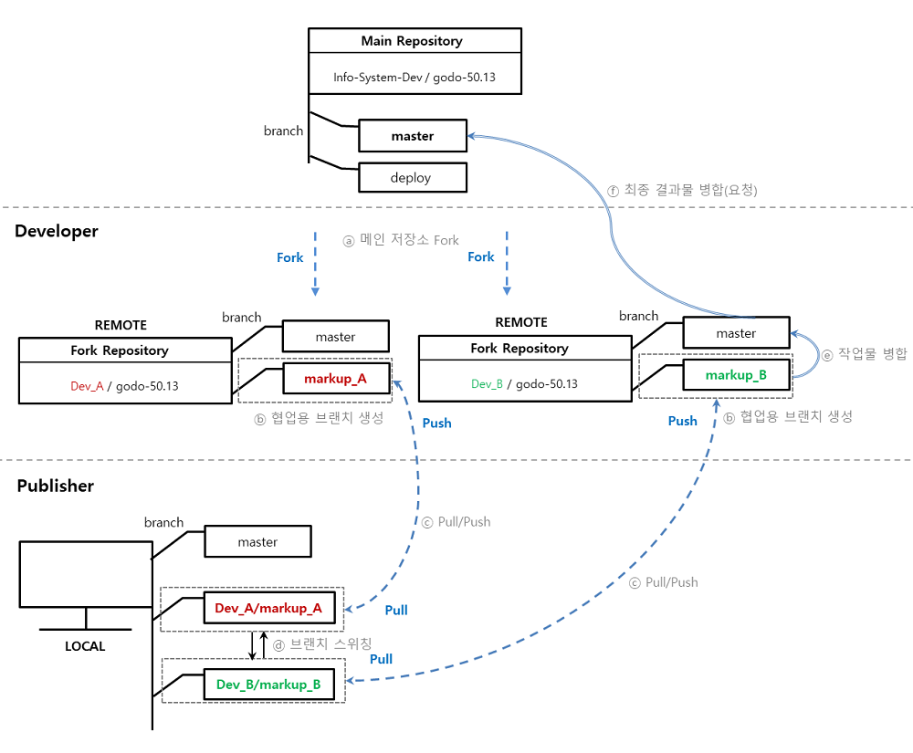

<!DOCTYPE html>
<html>
<head><meta name="generator" content="Hexo 3.8.0">
    <meta charset="utf-8">

    

    
    <title>Git 운용 정책 개선 | DEV Archive | YOONAH</title>
    
    <meta name="viewport" content="width=device-width, initial-scale=1, maximum-scale=1">
    
        <meta name="keywords" content="Git">
    
    <meta name="description" content="내부적으로 Git을 운영하며 발생한 이슈를 개선하였고, 그 당시 작성했던 가이드 문서를 일부분 가져왔다.  용어 정의 local : 로컬 저장소 remote : 원격 저장소 target 브랜치 : 마크업 작업물 전달 시 pull/push 대상 브랜치  ※ 브랜치(branch)란 : https://backlog.com/git-tutorial/kr/stepu">
<meta name="keywords" content="Git">
<meta property="og:type" content="article">
<meta property="og:title" content="Git 운용 정책 개선">
<meta property="og:url" content="https://yxxnah.github.io/2019/05/07/Git-Management-Policy/index.html">
<meta property="og:site_name" content="DEV Archive | YOONAH">
<meta property="og:description" content="내부적으로 Git을 운영하며 발생한 이슈를 개선하였고, 그 당시 작성했던 가이드 문서를 일부분 가져왔다.  용어 정의 local : 로컬 저장소 remote : 원격 저장소 target 브랜치 : 마크업 작업물 전달 시 pull/push 대상 브랜치  ※ 브랜치(branch)란 : https://backlog.com/git-tutorial/kr/stepu">
<meta property="og:locale" content="en">
<meta property="og:image" content="https://yxxnah.github.io/2019/05/07/Git-Management-Policy/1.png">
<meta property="og:updated_time" content="2019-10-02T12:42:22.626Z">
<meta name="twitter:card" content="summary">
<meta name="twitter:title" content="Git 운용 정책 개선">
<meta name="twitter:description" content="내부적으로 Git을 운영하며 발생한 이슈를 개선하였고, 그 당시 작성했던 가이드 문서를 일부분 가져왔다.  용어 정의 local : 로컬 저장소 remote : 원격 저장소 target 브랜치 : 마크업 작업물 전달 시 pull/push 대상 브랜치  ※ 브랜치(branch)란 : https://backlog.com/git-tutorial/kr/stepu">
<meta name="twitter:image" content="https://yxxnah.github.io/2019/05/07/Git-Management-Policy/1.png">
    

    

    
        <link rel="icon" href="/images/favicons/favicon.ico">
    

    <link rel="stylesheet" href="/libs/font-awesome/css/font-awesome.min.css">
    <link rel="stylesheet" href="/libs/titillium-web/styles.css">
    <link rel="stylesheet" href="/libs/source-code-pro/styles.css">

    <link rel="stylesheet" href="/css/style.css">

    <script src="/libs/jquery/3.3.1/jquery.min.js"></script>
    
    
        <link rel="stylesheet" href="/libs/lightgallery/css/lightgallery.min.css">
    
    
        <link rel="stylesheet" href="/libs/justified-gallery/justifiedGallery.min.css">
    
    
    


    <link rel="stylesheet" type="text/css" href>
    <link rel="stylesheet" href="https://cdn.rawgit.com/innks/NanumSquareRound/master/nanumsquareround.css">
    <link rel="stylesheet" href="https://fonts.googleapis.com/earlyaccess/nanumgothiccoding.css">
    <link rel="stylesheet" href="/css/style.css">
</head>
</html>
<body>
    <div id="wrap">
        <header id="header">
    <div id="header-outer" class="outer">
        <div class="container">
            <div class="container-inner">
                <div id="header-title">
                    <h1 class="logo-wrap">
                        <a href="/" class="logo"></a>
                    </h1>
                    
                        <h2 class="subtitle-wrap">
                            <p class="subtitle">LESS IS MORE</p>
                        </h2>
                    
                </div>
                <div id="header-inner" class="nav-container">
                    <a id="main-nav-toggle" class="nav-icon fa fa-bars"></a>
                    <div class="nav-container-inner">
                        <ul id="main-nav">
                            
                                <li class="main-nav-list-item">
                                    <a class="main-nav-list-link" href="/">Home</a>
                                </li>
                            
                                        <ul class="main-nav-list"><li class="main-nav-list-item"><a class="main-nav-list-link" href="/categories/Programming/">Programming</a><ul class="main-nav-list-child"><li class="main-nav-list-item"><a class="main-nav-list-link" href="/categories/Programming/Git/">Git</a></li><li class="main-nav-list-item"><a class="main-nav-list-link" href="/categories/Programming/Java/">Java</a></li><li class="main-nav-list-item"><a class="main-nav-list-link" href="/categories/Programming/Tech/">Tech</a></li><li class="main-nav-list-item"><a class="main-nav-list-link" href="/categories/Programming/python/">python</a></li></ul></li></ul>
                                    
                                <li class="main-nav-list-item">
                                    <a class="main-nav-list-link" href="https://www.linkedin.com/in/yoonah-seo-a01040179/">About</a>
                                </li>
                            
                        </ul>
                        <nav id="sub-nav">
                            <div id="search-form-wrap">

    <form class="search-form">
        <input type="text" class="ins-search-input search-form-input" placeholder="Search">
        <button type="submit" class="search-form-submit"></button>
    </form>
    <div class="ins-search">
    <div class="ins-search-mask"></div>
    <div class="ins-search-container">
        <div class="ins-input-wrapper">
            <input type="text" class="ins-search-input" placeholder="Type something...">
            <span class="ins-close ins-selectable"><i class="fa fa-times-circle"></i></span>
        </div>
        <div class="ins-section-wrapper">
            <div class="ins-section-container"></div>
        </div>
    </div>
</div>
<script>
(function (window) {
    var INSIGHT_CONFIG = {
        TRANSLATION: {
            POSTS: 'Posts',
            PAGES: 'Pages',
            CATEGORIES: 'Categories',
            TAGS: 'Tags',
            UNTITLED: '(Untitled)',
        },
        ROOT_URL: '/',
        CONTENT_URL: '/content.json',
    };
    window.INSIGHT_CONFIG = INSIGHT_CONFIG;
})(window);
</script>
<script src="/js/insight.js"></script>

</div>
                        </nav>
                    </div>
                </div>
            </div>
        </div>
    </div>
</header>
        <div class="container">
            <div class="main-body container-inner">
                <div class="main-body-inner">
                    <section id="main">
                        <div class="main-body-header">
    <h1 class="header">
    
    <a class="page-title-link" href="/categories/Programming/">Programming</a><i class="icon fa fa-angle-right"></i><a class="page-title-link" href="/categories/Programming/Git/">Git</a>
    </h1>
</div>

                        <div class="main-body-content">
                            <article id="post-Git-Management-Policy" class="article article-single article-type-post" itemscope itemprop="blogPost">
    <div class="article-inner">
        
            <header class="article-header">
                
    
        <h1 class="article-title" itemprop="name">
        Git 운용 정책 개선
        </h1>
    

            </header>
        
        
            <div class="article-meta">
                
    <div class="article-date">
        <a href="/2019/05/07/Git-Management-Policy/" class="article-date">
            <time datetime="2019-05-07T02:14:51.000Z" itemprop="datePublished">2019-05-07</time>
        </a>
    </div>

		

                
    <div class="article-tag">
        <i class="fa fa-tag"></i>
        <a class="tag-link" href="/tags/Git/">Git</a>
    </div>

            </div>
        
        
        <div class="article-entry" itemprop="articleBody">
            <blockquote>
<p>내부적으로 Git을 운영하며 발생한 이슈를 개선하였고, 그 당시 작성했던 가이드 문서를 일부분 가져왔다.</p>
</blockquote>
<h2 id="용어-정의"><a href="#용어-정의" class="headerlink" title="용어 정의"></a>용어 정의</h2><ul>
<li>local : 로컬 저장소</li>
<li>remote : 원격 저장소</li>
<li>target 브랜치 : 마크업 작업물 전달 시 pull/push 대상 브랜치</li>
</ul>
<p>※ 브랜치(branch)란 : <a href="https://backlog.com/git-tutorial/kr/stepup/stepup1_1.html" target="_blank" rel="noopener">https://backlog.com/git-tutorial/kr/stepup/stepup1_1.html</a></p>
<h2 id="현재-운용중인-git-프로세스"><a href="#현재-운용중인-git-프로세스" class="headerlink" title="현재 운용중인 git 프로세스"></a>현재 운용중인 git 프로세스</h2><ul>
<li><span style="color:#e11d21"><strong>퍼블리셔 local : </strong></span> 담당 개발자 remote pull &gt; 작업 &gt; commit &gt; push</li>
<li><span style="color:#0052cc"><strong>개발자 local : </strong></span> remote pull &gt; 작업 &gt; commit &gt; push (to remote)</li>
<li><span style="color:#0052cc"><strong>개발자 remote</strong></span> : merge request <span style="color:#009800">=&gt; 메인 저장소에 병합</span></li>
</ul>
<h2 id="이슈"><a href="#이슈" class="headerlink" title="이슈"></a>이슈</h2><ul>
<li><strong>잦은 파일 충돌</strong> : (퍼블리셔) pull 명령어 실행 시, 파일 충돌이 잦아 작업물 전달에 어려움이 있음<br>=&gt; 현재 퍼블리셔의 local 에서는 1개의 master 브랜치를 사용 중이며,<br>이곳에서 각 담당 개발자들의 소스를 그때그때마다 pull 하는 구조 (개발자별로 master 브랜치 내용이 상이하기때문에 충돌이 날 수 밖에 없음)</li>
<li><strong>병렬 작업의 어려움</strong> : 현재 master 브랜치 1개만 사용하고 있어 프로젝트(담당 개발자)가 다른 경우 병렬로 작업하기 어려움</li>
</ul>
<h2 id="신규-운용-정책"><a href="#신규-운용-정책" class="headerlink" title="신규 운용 정책"></a>신규 운용 정책</h2><p></p>
<ul>
<li><p>ⓐ 메인 저장소 Fork : 메인 저장소를 Fork 하여 리모트 저장소를 생성합니다.</p>
</li>
<li><p>ⓑ 협업용 브랜치 생성 : 퍼블리셔와 개발자가 협업해야 하는 프로젝트인 경우 각 담당 <span style="color:#0052cc"><strong>개발자</strong></span>는 신규 브랜치를 생성합니다. <span style="color:#e11d21"><strong>(여기서의 신규 브랜치는 remote 브랜치를 뜻합니다.)</strong></span></p>
</li>
<li><p>ⓒ pull/push : <span style="color:#e11d21"><strong>퍼블리셔</strong></span>는 담당 개발자가 생성한 브랜치에서(로) pull/push 합니다.</p>
</li>
<li><p>ⓓ 브랜치 스위칭 : A, B브랜치를 스위칭하며 작업 가능합니다.</p>
</li>
<li><p>ⓔ 작업물 병합 : <span style="color:#0052cc"><strong>개발자</strong></span>는 퍼블리셔가 push한 내용을 master 브랜치에 병합해줍니다.<br><span style="color:#0052cc">※ 위 과정에서 생긴 충돌 이슈는 각 개발자가 해결합니다.</span></p>
</li>
<li><p>ⓕ 최종 결과물 병합 요청 (메인 저장소) : <span style="color:#0052cc"><strong>개발자</strong></span>는 최종 결과물을 메인 저장소로 merge request 합니다.</p>
</li>
</ul>
<h2 id="Settings"><a href="#Settings" class="headerlink" title="Settings"></a>Settings</h2><h2 id="퍼블리셔-git-설정-최초-설정"><a href="#퍼블리셔-git-설정-최초-설정" class="headerlink" title="퍼블리셔 : git 설정 (최초 설정)"></a><span style="color:#e11d21">퍼블리셔</span> : git 설정 (최초 설정)</h2><p>참고 : <a href="https://git-scm.com/book/ko/v2/Git-도구-Reset-명확히-알고-가기" target="_blank" rel="noopener">https://git-scm.com/book/ko/v2/Git-도구-Reset-명확히-알고-가기</a></p>
<ol>
<li><p>local 저장소 생성 (기존 데이터가 존재한다면 초기화 후 새롭게 설정)</p>
<figure class="highlight bash"><table><tr><td class="gutter"><pre><span class="line">1</span><br></pre></td><td class="code"><pre><span class="line">$ git init</span><br></pre></td></tr></table></figure>
</li>
<li><p>작업자 정보 등록</p>
<figure class="highlight bash"><table><tr><td class="gutter"><pre><span class="line">1</span><br><span class="line">2</span><br></pre></td><td class="code"><pre><span class="line">$ git config –<span class="built_in">local</span> user.name ‘마크업담당자 영문명’</span><br><span class="line">$ git config –<span class="built_in">local</span> user.email ‘마크업담당자 메일주소’</span><br></pre></td></tr></table></figure>
</li>
<li><p>담당 개발자의 remote 연결 <span style="color:#e11d21">(개발자가 추가될 때마다 실행)</span></p>
<figure class="highlight bash"><table><tr><td class="gutter"><pre><span class="line">1</span><br></pre></td><td class="code"><pre><span class="line">$ git remote add [별칭] [reomte git url]</span><br></pre></td></tr></table></figure>
</li>
</ol>
<figure class="highlight bash"><table><tr><td class="gutter"><pre><span class="line">1</span><br></pre></td><td class="code"><pre><span class="line">[pubDev@isddb godo-50.13]$ git remote add devA https://seoyoonah@test.co.kr/seoyoonah/test.git</span><br></pre></td></tr></table></figure>
<ol start="4">
<li>remote 연결 확인<figure class="highlight plain"><table><tr><td class="gutter"><pre><span class="line">1</span><br></pre></td><td class="code"><pre><span class="line">git remote -v</span><br></pre></td></tr></table></figure>
</li>
</ol>
<h2 id="퍼블리셔-작업-직전-설정"><a href="#퍼블리셔-작업-직전-설정" class="headerlink" title="퍼블리셔 : 작업 직전 설정"></a><span style="color:#e11d21">퍼블리셔</span> : 작업 직전 설정</h2><ul>
<li>remote 소스 당겨받기 (개발자 저장소의 브랜치를 반영해주어야 하기 때문에 꼭 해당 과정을 거쳐야 합니다.)<figure class="highlight bash"><table><tr><td class="gutter"><pre><span class="line">1</span><br></pre></td><td class="code"><pre><span class="line">$ git pull [remote 명]</span><br></pre></td></tr></table></figure>
</li>
</ul>
<p>ex) 연결한 devA의 reomte 소스 당겨받기<br><figure class="highlight bash"><table><tr><td class="gutter"><pre><span class="line">1</span><br></pre></td><td class="code"><pre><span class="line">[pubDev@isddb godo-50.13]$ git pull devA</span><br></pre></td></tr></table></figure></p>
<p>※ 해당 과정에서 pull 이 잘 받아지지 않는 경우,(작업내역 혼재) reset 시킨다.<br><figure class="highlight bash"><table><tr><td class="gutter"><pre><span class="line">1</span><br></pre></td><td class="code"><pre><span class="line">$ git reset --hard HEAD</span><br></pre></td></tr></table></figure></p>
<p><span style="color:#e11d21">(위 명령어는 현재 브랜치의 마지막 커밋으로 되돌아가는 행위)</span></p>
<h2 id="개발자A-협업용-브랜치-생성"><a href="#개발자A-협업용-브랜치-생성" class="headerlink" title="개발자A : 협업용 브랜치 생성"></a><span style="color:#0052cc">개발자A</span> : 협업용 브랜치 생성</h2><ul>
<li>마크업 작업 전, 담당개발자는 퍼블리셔가 pull/push 할 target 브랜치를 생성해주어야 합니다.<figure class="highlight bash"><table><tr><td class="gutter"><pre><span class="line">1</span><br></pre></td><td class="code"><pre><span class="line">$ git branch [브랜치명(별칭)]</span><br></pre></td></tr></table></figure>
</li>
</ul>
<p>ex) 개발자의 remote에 markup_A라는 브랜치 생성 (신규로 파일이 생성되는 경우, 해당 브랜치에는 생성한 파일이 포함되어있어야 합니다.)<br><figure class="highlight bash"><table><tr><td class="gutter"><pre><span class="line">1</span><br></pre></td><td class="code"><pre><span class="line">[developer@isddb godo-50.13]$ git branch markup_A</span><br></pre></td></tr></table></figure></p>
<ul>
<li>local 에서 브랜치를 생성하였다면, remote 까지 push 해주어야 합니다. (2019-03-04 추가)<figure class="highlight bash"><table><tr><td class="gutter"><pre><span class="line">1</span><br></pre></td><td class="code"><pre><span class="line">$ git push origin [브랜치명(별칭)]</span><br></pre></td></tr></table></figure>
</li>
</ul>
<h2 id="퍼블리셔-브랜치-checkout"><a href="#퍼블리셔-브랜치-checkout" class="headerlink" title="퍼블리셔 : 브랜치 checkout"></a><span style="color:#e11d21">퍼블리셔</span> : 브랜치 checkout</h2><ul>
<li>(협의필요) 해당 내용이 복잡하다면 이 과정은 개발 담당자가 셋팅해줍니다.</li>
<li>target 브랜치가 생성되면 퍼블리셔도 로컬에 브랜치를 생성하며 동시에 target 브랜치를 checkout 합니다.<figure class="highlight bash"><table><tr><td class="gutter"><pre><span class="line">1</span><br></pre></td><td class="code"><pre><span class="line">$ git checkout -b [<span class="built_in">local</span> 브랜치명] [remote명]/[remote 브랜치명]</span><br></pre></td></tr></table></figure>
</li>
</ul>
<p>ex) ‘developerA’라는 별칭으로 target 브랜치를 checkout 받으며 로컬 브랜치를 생성합니다.<br><figure class="highlight bash"><table><tr><td class="gutter"><pre><span class="line">1</span><br></pre></td><td class="code"><pre><span class="line">[pubDev@isddb godo-50.13]$ git checkout -b devloperA devA/markup_A</span><br></pre></td></tr></table></figure></p>
<ul>
<li><p>브랜치가 잘 생성되었는지 확인합니다.</p>
<figure class="highlight bash"><table><tr><td class="gutter"><pre><span class="line">1</span><br></pre></td><td class="code"><pre><span class="line">$ git branch</span><br></pre></td></tr></table></figure>
</li>
<li><p>해당 브랜치에서 작업을 진행하면 됩니다. (pull &gt; commit &gt; push)</p>
</li>
</ul>
<h2 id="시뮬레이션-현재-A프로젝트-진행-중인데-갑자기-B프로젝트-작업을-해야하는데요"><a href="#시뮬레이션-현재-A프로젝트-진행-중인데-갑자기-B프로젝트-작업을-해야하는데요" class="headerlink" title="(시뮬레이션) 현재 A프로젝트 진행 중인데, 갑자기 B프로젝트 작업을 해야하는데요?"></a>(시뮬레이션) 현재 A프로젝트 진행 중인데, 갑자기 B프로젝트 작업을 해야하는데요?</h2><p>: A프로젝트 개발자 ≠ B프로젝트 개발자 (즉, pull/push의 대상이 되는 target 브랜치가 상이)</p>
<ul>
<li>현재는 A브랜치에서 작업 진행 중 인데, <span style="color:#0052cc">중간에 다른 개발자(B)의 소스를 받아 작업을 해야하는 경우</span>를 설명합니다.</li>
<li><p>개발자B의 git remote 까지는 등록이 되어있다고 가정합니다.</p>
</li>
<li><p>개발자B는 브랜치를 생성합니다.</p>
<figure class="highlight bash"><table><tr><td class="gutter"><pre><span class="line">1</span><br></pre></td><td class="code"><pre><span class="line">$ git branch [브랜치명(별칭)]</span><br></pre></td></tr></table></figure>
</li>
</ul>
<figure class="highlight bash"><table><tr><td class="gutter"><pre><span class="line">1</span><br></pre></td><td class="code"><pre><span class="line">[developer@isddb godo-50.13]$ git branch markup_B</span><br></pre></td></tr></table></figure>
<ul>
<li><p>생성된 target 브랜치를 퍼블리셔 계정에서 로컬에 생성하며 동시에 checkout 합니다.</p>
<figure class="highlight bash"><table><tr><td class="gutter"><pre><span class="line">1</span><br></pre></td><td class="code"><pre><span class="line">$ git checkout -b devloperB(별칭) devB/markup_B</span><br></pre></td></tr></table></figure>
</li>
<li><p>브랜치가 잘 생성되었는지 확인합니다.</p>
<figure class="highlight bash"><table><tr><td class="gutter"><pre><span class="line">1</span><br></pre></td><td class="code"><pre><span class="line">$ git branch</span><br></pre></td></tr></table></figure>
</li>
<li><p>해당 브랜치에서 작업을 진행하면 됩니다. (pull &gt; commit &gt; push)</p>
</li>
</ul>
<h2 id="브랜치-스위칭-writing-hand-중요"><a href="#브랜치-스위칭-writing-hand-중요" class="headerlink" title="브랜치 스위칭 (:writing_hand:중요)"></a>브랜치 스위칭 (:writing_hand:중요)</h2><p>: 각 개발자별로 생성한 브랜치를 스위칭하며 작업이 가능합니다.<br>※ 프로젝트를 1개 이상 진행하는 경우, <span style="color:#e11d21">현재 위치한 브랜치를 반드시 확인하여 pull/push를 해야합니다.</span><br><strong>만약 push 대상이 아닌 브랜치로 push를 하였다면 개발자에게 인지시켜주어야 합니다.</strong><br><figure class="highlight bash"><table><tr><td class="gutter"><pre><span class="line">1</span><br></pre></td><td class="code"><pre><span class="line">$ git checkout [로컬 브랜치명]</span><br></pre></td></tr></table></figure></p>
<h2 id="stash"><a href="#stash" class="headerlink" title="stash"></a>stash</h2><p><span style="color:#e11d21">※ 작업내역이 남아있는 상태에서 브랜치를 스위칭 했을 때, 에러가 날 수 있습니다! 그런경우 스태시를 활용하면 됩니다.</span><br>참고 : <a href="https://backlog.com/git-tutorial/kr/stepup/stepup1_3.html" target="_blank" rel="noopener">https://backlog.com/git-tutorial/kr/stepup/stepup1_3.html</a></p>
<ul>
<li><p>작업 내역 담기</p>
<figure class="highlight bash"><table><tr><td class="gutter"><pre><span class="line">1</span><br></pre></td><td class="code"><pre><span class="line">$ git stash</span><br></pre></td></tr></table></figure>
</li>
<li><p>작업내역 꺼내기</p>
<figure class="highlight bash"><table><tr><td class="gutter"><pre><span class="line">1</span><br></pre></td><td class="code"><pre><span class="line">$ git stash pop</span><br></pre></td></tr></table></figure>
</li>
</ul>
<h2 id="commit"><a href="#commit" class="headerlink" title="commit"></a>commit</h2><p>: 작업이 완료된 후 작업 내역을 커밋합니다. (기존과 동일)<br><figure class="highlight bash"><table><tr><td class="gutter"><pre><span class="line">1</span><br></pre></td><td class="code"><pre><span class="line">$ git commit -m <span class="string">'#100 Promotion'</span></span><br></pre></td></tr></table></figure></p>
<h2 id="push"><a href="#push" class="headerlink" title="push"></a>push</h2><p>: commit 후, 개발자의 remote 브랜치로 push 합니다.<br><figure class="highlight bash"><table><tr><td class="gutter"><pre><span class="line">1</span><br></pre></td><td class="code"><pre><span class="line">$ git push [remote명] [<span class="built_in">local</span> 브랜치명]:[remote 브랜치명]</span><br></pre></td></tr></table></figure></p>
<p>ex) 개발자B의 markup_B 브랜치로 로컬 브랜치(developerB) push<br><figure class="highlight bash"><table><tr><td class="gutter"><pre><span class="line">1</span><br></pre></td><td class="code"><pre><span class="line">[pubDev@isddb godo-50.13]$ git push devB developerB:markup_B</span><br></pre></td></tr></table></figure></p>
<h2 id="merge"><a href="#merge" class="headerlink" title="merge"></a>merge</h2><p>: 각 개발자는 퍼블리셔가 push 한 내용을 origin/master로 병합합니다.<br>※ merge &gt; pull request 시, 체크박스가 디폴트로 체크되어있습니다. (병합하면서 해당 브랜치를 삭제하겠다는 뜻)<br><span style="color:#e11d21">브랜치를 병합 후에도 사용하려면 체크를 해제해야합니다.</span></p>
<h2 id="pull"><a href="#pull" class="headerlink" title="pull"></a>pull</h2><p>: 프로젝트가 끝나면 브랜치를 삭제하는것이 좋지만, 매번 생성/삭제가 번거롭다면 각 개발자와 퍼블리셔가 협의하여 계속 사용 할 수도 있습니다.</p>
<ul>
<li>개발자는 해당 브랜치에서 origin/master를 pull 하여 싱크를 맞춰줍니다.</li>
<li>싱크를 맞췄다면 퍼블리셔는 pull 을 실행합니다.<figure class="highlight plain"><table><tr><td class="gutter"><pre><span class="line">1</span><br></pre></td><td class="code"><pre><span class="line">git pull [remote명] [remote 브랜치명]:[local 브랜치명]</span><br></pre></td></tr></table></figure>
</li>
</ul>
<p>ex) 개발자B의 markup_B 브랜치 변경사항을 로컬 브랜치(developerB)에 pull<br><figure class="highlight plain"><table><tr><td class="gutter"><pre><span class="line">1</span><br></pre></td><td class="code"><pre><span class="line">[pubDev@isddb godo-50.13]$ git pull devB markup_B:developerB</span><br></pre></td></tr></table></figure></p>
<h2 id="주의사항"><a href="#주의사항" class="headerlink" title="주의사항"></a>주의사항</h2><h3 id="퍼블리셔"><a href="#퍼블리셔" class="headerlink" title="퍼블리셔"></a><strong><span style="color:#e11d21">퍼블리셔</span></strong></h3><ul>
<li><p>모든 commit/push 전, 현재 위치한 브랜치를 반드시 확인해야합니다.</p>
<figure class="highlight bash"><table><tr><td class="gutter"><pre><span class="line">1</span><br></pre></td><td class="code"><pre><span class="line">$ git branch</span><br></pre></td></tr></table></figure>
</li>
<li><p>위 명령어로 확인했을 때 현재 push 해야 할 브랜치가 아니라면, 브랜치를 스위칭 하여 commit/push 해야합니다.</p>
<figure class="highlight bash"><table><tr><td class="gutter"><pre><span class="line">1</span><br></pre></td><td class="code"><pre><span class="line">$ git checkout [브랜치명]</span><br></pre></td></tr></table></figure>
</li>
</ul>
<h3 id="개발자"><a href="#개발자" class="headerlink" title="개발자"></a><span style="color:#0052cc">개발자</span></h3><ul>
<li>각 개발자마다 master 브랜치의 내용이 상이하기 때문에 퍼블리셔가 push한 내역을 병합할 때 충돌이 발생할 수 있습니다.</li>
<li>프로젝트가 끝나면 협업 브랜치를 삭제해도 좋지만, 계속 사용할거라면 origin/master와 싱크를 맞춰주어야 합니다.</li>
</ul>
<h2 id="적용-일정"><a href="#적용-일정" class="headerlink" title="적용 일정"></a>적용 일정</h2><ul>
<li>가이드 1차 작성 및 내부 검토 : 08/13(월) ~ 08/14(화)</li>
<li>가이드 2차 작성(보완) 및 완료 : 08/16(목)</li>
<li>디자인팀(퍼블리셔) 대상 리뷰 : 08/20(월)</li>
<li>1차 적용 (해당 시점 프로젝트부터 점진적으로 적용) : <strong>08/27(월)</strong> ~</li>
</ul>

        </div>
        <footer class="article-footer">
            


    <a data-url="https://yxxnah.github.io/2019/05/07/Git-Management-Policy/" data-id="ck1eo9kep00077h3zu9tfml9r" class="article-share-link"><i class="fa fa-share"></i>Share</a>
<script>
    (function ($) {
        $('body').on('click', function() {
            $('.article-share-box.on').removeClass('on');
        }).on('click', '.article-share-link', function(e) {
            e.stopPropagation();

            var $this = $(this),
                url = $this.attr('data-url'),
                encodedUrl = encodeURIComponent(url),
                id = 'article-share-box-' + $this.attr('data-id'),
                offset = $this.offset(),
                box;

            if ($('#' + id).length) {
                box = $('#' + id);

                if (box.hasClass('on')){
                    box.removeClass('on');
                    return;
                }
            } else {
                var html = [
                    '<div id="' + id + '" class="article-share-box">',
                        '<input class="article-share-input" value="' + url + '">',
                        '<div class="article-share-links">',
                            '<a href="https://twitter.com/intent/tweet?url=' + encodedUrl + '" class="article-share-twitter" target="_blank" title="Twitter"></a>',
                            '<a href="https://www.facebook.com/sharer.php?u=' + encodedUrl + '" class="article-share-facebook" target="_blank" title="Facebook"></a>',
                            '<a href="http://pinterest.com/pin/create/button/?url=' + encodedUrl + '" class="article-share-pinterest" target="_blank" title="Pinterest"></a>',
                            '<a href="https://plus.google.com/share?url=' + encodedUrl + '" class="article-share-google" target="_blank" title="Google+"></a>',
                        '</div>',
                    '</div>'
                ].join('');

              box = $(html);

              $('body').append(box);
            }

            $('.article-share-box.on').hide();

            box.css({
                top: offset.top + 25,
                left: offset.left
            }).addClass('on');

        }).on('click', '.article-share-box', function (e) {
            e.stopPropagation();
        }).on('click', '.article-share-box-input', function () {
            $(this).select();
        }).on('click', '.article-share-box-link', function (e) {
            e.preventDefault();
            e.stopPropagation();

            window.open(this.href, 'article-share-box-window-' + Date.now(), 'width=500,height=450');
        });
    })(jQuery);
</script>

        </footer>
    </div>
    <script type="application/ld+json">
    {
        "@context": "https://schema.org",
        "@type": "BlogPosting",
        "author": {
            "@type": "Person",
            "name": "Yoonah Seo"
        },
        "headline": "Git 운용 정책 개선",
        "image": "https://yxxnah.github.io1.png",
        "keywords": "Git",
        "genre": "Programming Git",
        "datePublished": "2019-05-07",
        "dateCreated": "2019-05-07",
        "dateModified": "2019-10-02",
        "url": "https://yxxnah.github.io/2019/05/07/Git-Management-Policy/",
        "description": "
내부적으로 Git을 운영하며 발생한 이슈를 개선하였고, 그 당시 작성했던 가이드 문서를 일부분 가져왔다.

용어 정의
local : 로컬 저장소
remote : 원격 저장소
target 브랜치 : 마크업 작업물 전달 시 pull/push 대상 브랜치

※ 브랜치(branch)란 : https://backlog.com/git-tutorial/kr/stepu"
        "wordCount": 1076
    }
</script>

</article>

    <section id="comments">
    
        
    <div id="disqus_thread">
        <noscript>Please enable JavaScript to view the <a href="//disqus.com/?ref_noscript">comments powered by Disqus.</a></noscript>
    </div>

    
    </section>


                        </div>
                    </section>
                    <aside id="sidebar">
    <a class="sidebar-toggle" title="Expand Sidebar"><i class="toggle icon"></i></a>
    <div class="github-card" data-github="yxxnah" data-width="340" data-height="150" data-theme="default"></div>
    <script src="//cdn.jsdelivr.net/github-cards/latest/widget.js"></script>
    
        
<nav id="article-nav">
    
        <a href="/2019/09/01/Regular-Expression/" id="article-nav-newer" class="article-nav-link-wrap">
        <strong class="article-nav-caption">newer</strong>
        <p class="article-nav-title">
        
            파이썬으로 웹 크롤링(Web Crawling) 하기(1) Regular Expression
        
        </p>
        <i class="icon fa fa-chevron-right" id="icon-chevron-right"></i>
    </a>
    
    
        <a href="/2019/04/22/Java-Study-2/" id="article-nav-older" class="article-nav-link-wrap">
        <strong class="article-nav-caption">older</strong>
        <p class="article-nav-title">Java Study - 2회차</p>
        <i class="icon fa fa-chevron-left" id="icon-chevron-left"></i>
        </a>
    
</nav>

    
    <div class="widgets-container">
        
            
                

            
                
    <div class="widget-wrap">
        <h3 class="widget-title">recents</h3>
        <div class="widget">
            <ul id="recent-post" class="no-thumbnail">
                
                    <li>
                        
                        <div class="item-inner">
                            <p class="item-category"><a class="article-category-link" href="/categories/Programming/">Programming</a><i class="icon fa fa-angle-right"></i><a class="article-category-link" href="/categories/Programming/python/">python</a></p>
                            <p class="item-title"><a href="/2019/10/02/Web-Crawling-4-Selenium/" class="title">파이썬으로 웹 크롤링(Web Crawling) 하기(4) Selenium 사용하기</a></p>
                            <p class="item-date"><time datetime="2019-10-02T12:20:11.000Z" itemprop="datePublished">2019-10-02</time></p>
                        </div>
                    </li>
                
                    <li>
                        
                        <div class="item-inner">
                            <p class="item-category"><a class="article-category-link" href="/categories/Programming/">Programming</a><i class="icon fa fa-angle-right"></i><a class="article-category-link" href="/categories/Programming/python/">python</a></p>
                            <p class="item-title"><a href="/2019/10/02/Web-Crawling-3-Database/" class="title">파이썬으로 웹 크롤링(Web Crawling) 하기(3) Database</a></p>
                            <p class="item-date"><time datetime="2019-10-02T07:36:46.000Z" itemprop="datePublished">2019-10-02</time></p>
                        </div>
                    </li>
                
                    <li>
                        
                        <div class="item-inner">
                            <p class="item-category"><a class="article-category-link" href="/categories/Programming/">Programming</a><i class="icon fa fa-angle-right"></i><a class="article-category-link" href="/categories/Programming/python/">python</a></p>
                            <p class="item-title"><a href="/2019/09/02/Web-Crawling-2-BeautifulSoup/" class="title">파이썬으로 웹 크롤링(Web Crawling) 하기(2) BeautifulSoup</a></p>
                            <p class="item-date"><time datetime="2019-09-02T09:07:44.000Z" itemprop="datePublished">2019-09-02</time></p>
                        </div>
                    </li>
                
                    <li>
                        
                        <div class="item-inner">
                            <p class="item-category"><a class="article-category-link" href="/categories/Programming/">Programming</a><i class="icon fa fa-angle-right"></i><a class="article-category-link" href="/categories/Programming/python/">python</a></p>
                            <p class="item-title"><a href="/2019/09/01/Regular-Expression/" class="title">파이썬으로 웹 크롤링(Web Crawling) 하기(1) Regular Expression</a></p>
                            <p class="item-date"><time datetime="2019-09-01T10:29:53.000Z" itemprop="datePublished">2019-09-01</time></p>
                        </div>
                    </li>
                
                    <li>
                        
                        <div class="item-inner">
                            <p class="item-category"><a class="article-category-link" href="/categories/Programming/">Programming</a><i class="icon fa fa-angle-right"></i><a class="article-category-link" href="/categories/Programming/Git/">Git</a></p>
                            <p class="item-title"><a href="/2019/05/07/Git-Management-Policy/" class="title">Git 운용 정책 개선</a></p>
                            <p class="item-date"><time datetime="2019-05-07T02:14:51.000Z" itemprop="datePublished">2019-05-07</time></p>
                        </div>
                    </li>
                
            </ul>
        </div>
    </div>

            
                
    <div class="widget-wrap widget-list">
        <h3 class="widget-title">categories</h3>
        <div class="widget">
            <ul class="category-list"><li class="category-list-item"><a class="category-list-link" href="/categories/Programming/">Programming</a><span class="category-list-count">12</span><ul class="category-list-child"><li class="category-list-item"><a class="category-list-link" href="/categories/Programming/Git/">Git</a><span class="category-list-count">4</span></li><li class="category-list-item"><a class="category-list-link" href="/categories/Programming/Java/">Java</a><span class="category-list-count">2</span></li><li class="category-list-item"><a class="category-list-link" href="/categories/Programming/Tech/">Tech</a><span class="category-list-count">2</span></li><li class="category-list-item"><a class="category-list-link" href="/categories/Programming/python/">python</a><span class="category-list-count">4</span></li></ul></li></ul>
        </div>
    </div>


            
                
    <div class="widget-wrap widget-list">
        <h3 class="widget-title">archives</h3>
        <div class="widget">
            <ul class="archive-list"><li class="archive-list-item"><a class="archive-list-link" href="/archives/2019/10/">October 2019</a><span class="archive-list-count">2</span></li><li class="archive-list-item"><a class="archive-list-link" href="/archives/2019/09/">September 2019</a><span class="archive-list-count">2</span></li><li class="archive-list-item"><a class="archive-list-link" href="/archives/2019/05/">May 2019</a><span class="archive-list-count">1</span></li><li class="archive-list-item"><a class="archive-list-link" href="/archives/2019/04/">April 2019</a><span class="archive-list-count">7</span></li></ul>
        </div>
    </div>


            
                
    <div class="widget-wrap widget-list">
        <h3 class="widget-title">tags</h3>
        <div class="widget">
            <ul class="tag-list"><li class="tag-list-item"><a class="tag-list-link" href="/tags/Git/">Git</a><span class="tag-list-count">4</span></li><li class="tag-list-item"><a class="tag-list-link" href="/tags/Java/">Java</a><span class="tag-list-count">2</span></li><li class="tag-list-item"><a class="tag-list-link" href="/tags/MSA/">MSA</a><span class="tag-list-count">1</span></li><li class="tag-list-item"><a class="tag-list-link" href="/tags/Tech/">Tech</a><span class="tag-list-count">1</span></li><li class="tag-list-item"><a class="tag-list-link" href="/tags/python/">python</a><span class="tag-list-count">4</span></li><li class="tag-list-item"><a class="tag-list-link" href="/tags/정규식/">정규식</a><span class="tag-list-count">1</span></li></ul>
        </div>
    </div>


            
                
    <div class="widget-wrap widget-float">
        <h3 class="widget-title">tag cloud</h3>
        <div class="widget tagcloud">
            <a href="/tags/Git/" style="font-size: 20px;">Git</a> <a href="/tags/Java/" style="font-size: 15px;">Java</a> <a href="/tags/MSA/" style="font-size: 10px;">MSA</a> <a href="/tags/Tech/" style="font-size: 10px;">Tech</a> <a href="/tags/python/" style="font-size: 20px;">python</a> <a href="/tags/정규식/" style="font-size: 10px;">정규식</a>
        </div>
    </div>


            
                
    <div class="widget-wrap widget-list">
        <h3 class="widget-title">links</h3>
        <div class="widget">
            <ul>
                
                    <li>
                        <a href="http://hexo.io">Hexo</a>
                    </li>
                
            </ul>
        </div>
    </div>


            
        
    </div>
</aside>

                </div>
            </div>
        </div>
        <footer id="footer">
    <div class="container">
        <div class="container-inner">
            <a id="back-to-top" href="javascript:;"><i class="icon fa fa-angle-up"></i></a>
            <div class="credit">
                <h1 class="logo-wrap">
                    <a href="/" class="logo"></a>
                </h1>
                <p>&copy; 2019 Yoonah Seo</p>
                <p>Powered by <a href="//hexo.io/" target="_blank">Hexo</a>. Theme by <a href="//github.com/ppoffice" target="_blank">PPOffice</a></p>
            </div>
            <div class="footer-plugins">
              
    


            </div>
        </div>
    </div>
</footer>

        
    
    <script>
    var disqus_shortname = 'hexo-theme-hueman';
    
    
    var disqus_url = 'https://yxxnah.github.io/2019/05/07/Git-Management-Policy/';
    
    (function() {
    var dsq = document.createElement('script');
    dsq.type = 'text/javascript';
    dsq.async = true;
    dsq.src = '//' + disqus_shortname + '.disqus.com/embed.js';
    (document.getElementsByTagName('head')[0] || document.getElementsByTagName('body')[0]).appendChild(dsq);
    })();
    </script>


    
        <script src="/libs/lightgallery/js/lightgallery.min.js"></script>
        <script src="/libs/lightgallery/js/lg-thumbnail.min.js"></script>
        <script src="/libs/lightgallery/js/lg-pager.min.js"></script>
        <script src="/libs/lightgallery/js/lg-autoplay.min.js"></script>
        <script src="/libs/lightgallery/js/lg-fullscreen.min.js"></script>
        <script src="/libs/lightgallery/js/lg-zoom.min.js"></script>
        <script src="/libs/lightgallery/js/lg-hash.min.js"></script>
        <script src="/libs/lightgallery/js/lg-share.min.js"></script>
        <script src="/libs/lightgallery/js/lg-video.min.js"></script>
    
    
        <script src="/libs/justified-gallery/jquery.justifiedGallery.min.js"></script>
    
    


<!-- Custom Scripts -->
<script src="/js/main.js"></script>

    </div>
</body>
</html>
